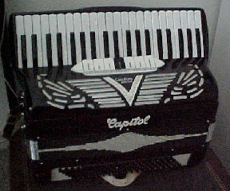
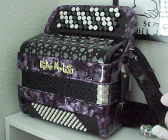
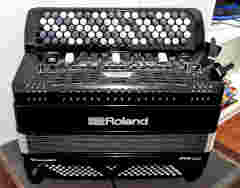
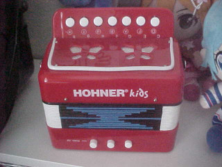

My Accordions
Currently I own three accordions! Here's my collection so far:
Capitol Piano Accordion

- Manufacturer: Capitol
- Model: "Custom-Built"
- Type: Piano
- Number of Keys: 41
- Left-Hand/Bass Buttons: 120
- Right-Hand Registers: LMH
- Left-Hand Registers: 3
- Notes: Has Master Register Palm Bar
This Capitol accordion was my very first accordion! It basically has all the features I wanted out of a first accordion: it has 120 bass buttons and LMH registers. I got it for a really good price on Craigslist (this is like the only real way to buy accordions btw lol). I have travelled with this accordion before and it was kind of miserable.
The Bébé Medusa

- Manufacturer: Bébé Medusa
- Model: 小型パープル
- Type: Chromatic Button Accordion (C System)
- Number of Right-Hand Buttons: 62
- Left-Hand/Bass Buttons: 72
- Right-Hand Registers: 1 (MM)
- Left-Hand Registers: 1
This is my second (and currently newest) accordion! The Bébé Medusa accordion is a chromatic button accordion made for beginners by J-Pop/Accordion group チャラン・ポ・ランタン (Charan Po Rantan). I've been wanting to learn how to play a CBA, but I was afraid of buying a massive and expensive one only to find out I didn't like it. When I found out Charan Po Rantan were selling their own accordions, I knew I had to get one, but currently they seem to only be shipping them out in Japan, and as of this writing they haven't been taking any new orders for the last few months as they're still fulfilling old orders. However... I managed to find this accordion on a Japanese auction site. I ended up buying it and despite the fact that I had to pay international shipping, it was still actually one of my cheapest options for getting a CBA!
This accordion has a wonderful musette sound to it which I love a lot. It's a good contrast to my other accordion, and makes me feel confident in maybe one day buying a bigger chromatic button accordion!
Roland FR-4XB

- Manufacturer: Roland
- Model: FR-4XB
- Type: Digital Chromatic Button Accordion
- Number of Right-Hand Buttons: 92
- Left-Hand/Bass Buttons: 120
- Right-Hand Registers: 14 (Digital)
- Left-Hand Registers: 7 (Digital)
This is a fancy digital accordion I've nicknamed "Rola-chan" after the character from Aikatsu Stars. Instead of using reeds, it has various sensors built into it and it synthesizes sound like a digital keyboard. Because of its digital nature, it's pretty versatile. Right now I have it configured for the C-system on the right hand side, but I could change it to B-system if I wanted to. Similarly, it supports both stradella bass and free bass on the left hand side.
It's a great accordion to mess around with because it's pretty lightweight and you don't actually need to activate the bellows if you don't want to. Its digital accordion tones don't fully match what a real accordion sound like, but it's fun to mess around with, easy to record, and great for practicing. But it does need to be plugged in to play.
HOHNER Kids

- Manufacturer: ???
- Model: HOHNER Kids
- Type: Diatonic Button Accordion (Toy)
- Number of Right-Hand Buttons: 7
- Left-Hand/Bass Buttons: 2
- Right-Hand Registers: 1
- Left-Hand Registers: 1
This is a small accordion I bought at a toy store! It is technically a fully functional accordion but... it's not really the best to play on. It's mainly intended to be used as a toy for children. While the accordion I have is labeled "HOHNER Kids", this model can be found under other brand names.
If you're an accordionist and you want a cute toy to display, I'd recommend this. Otherwise it's very bad and frustrating to play on. This is one of those gifts you'd give a child if you want their parents to suffer.